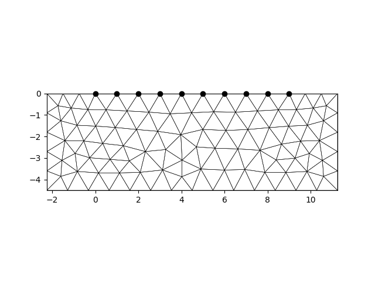
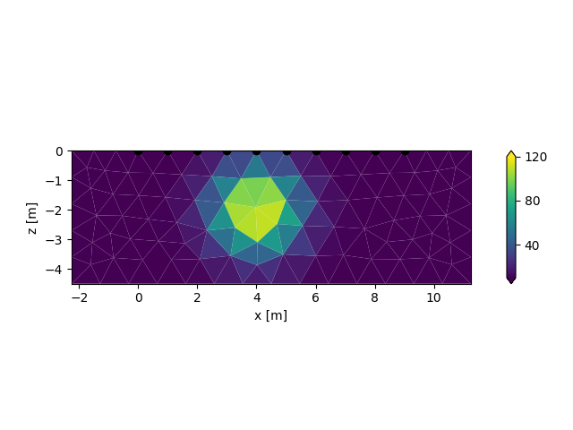
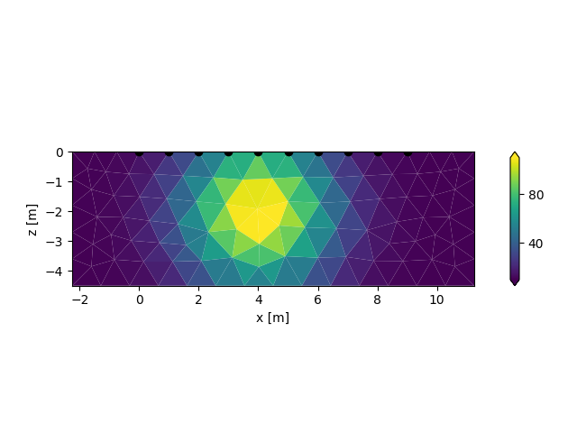
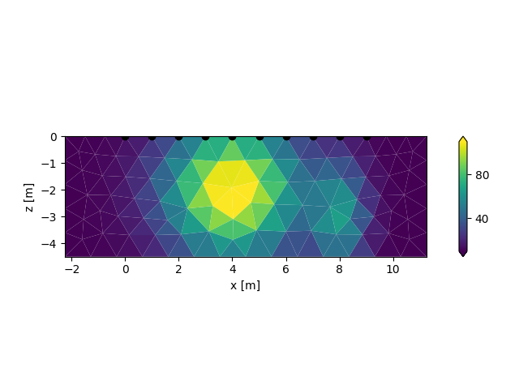

Note
Click here to download the full example code
Generate Gaussian Models
create a tomodir object
import crtomo
import matplotlib.pylab as plt
grid = crtomo.crt_grid('grid_surface/elem.dat', 'grid_surface/elec.dat')
tdm = crtomo.tdMan(grid=grid)
fig, ax = plt.subplots()
tdm.grid.plot_grid_to_ax(ax)

Out:
This grid was sorted using CutMcK. The nodes were resorted!
Triangular grid found
create a new parameter set with one anomaly
pid = tdm.parman.create_parset_with_gaussian_anomaly(
[4, -2],
max_value=100,
width=1,
background=10,
)
fig, ax = plt.subplots()
tdm.plot.plot_elements_to_ax(
pid,
ax=ax,
plot_colorbar=True,
cbmin=10,
cbmax=120,
)

create another new parameter set with one anomaly
pid = tdm.parman.create_parset_with_gaussian_anomaly(
[4, -2],
max_value=100,
width=3,
background=10,
)
fig, ax = plt.subplots()
tdm.plot.plot_elements_to_ax(
pid,
ax=ax,
plot_colorbar=True,
)

add an additional anomaly to this parset
tdm.parman.add_gaussian_anomaly_to_parset(
pid,
[8, -3],
width=[0.5, 2],
max_value=50,
)
fig, ax = plt.subplots()
tdm.plot.plot_elements_to_ax(
pid,
ax=ax,
plot_colorbar=True,
)
# sphinx_gallery_thumbnail_number = 2
